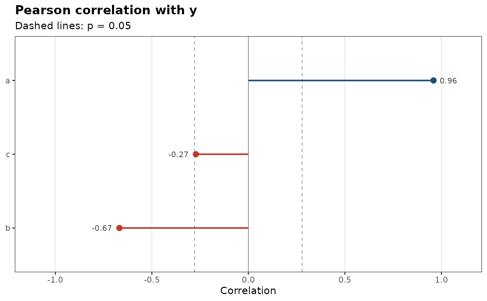
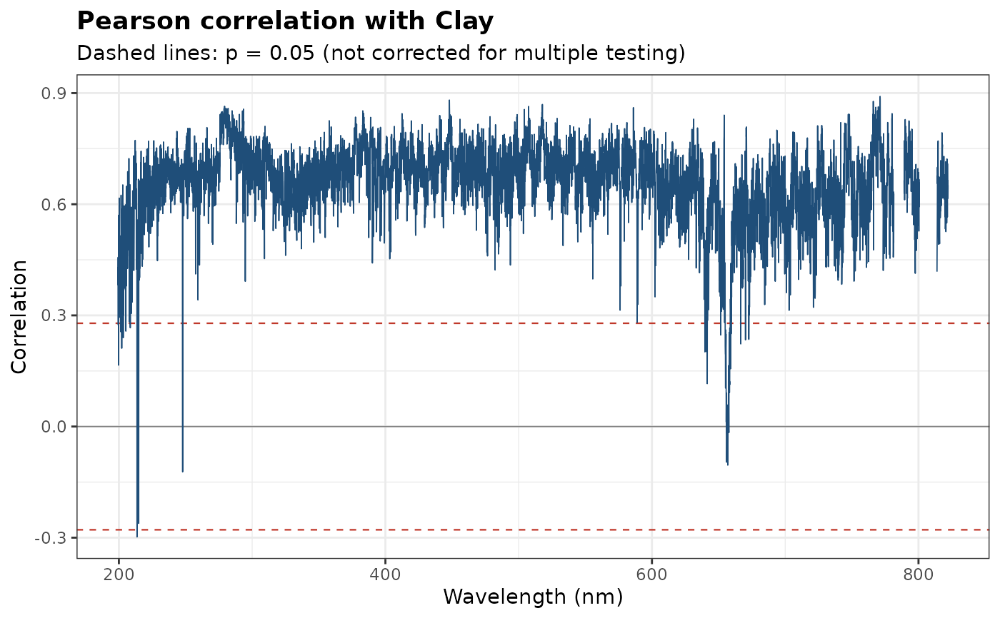
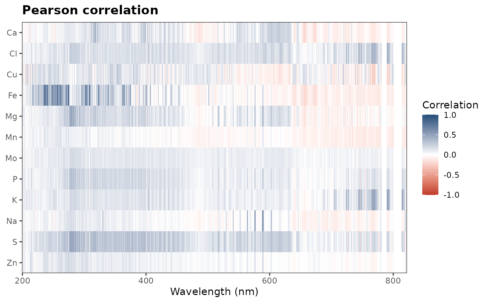
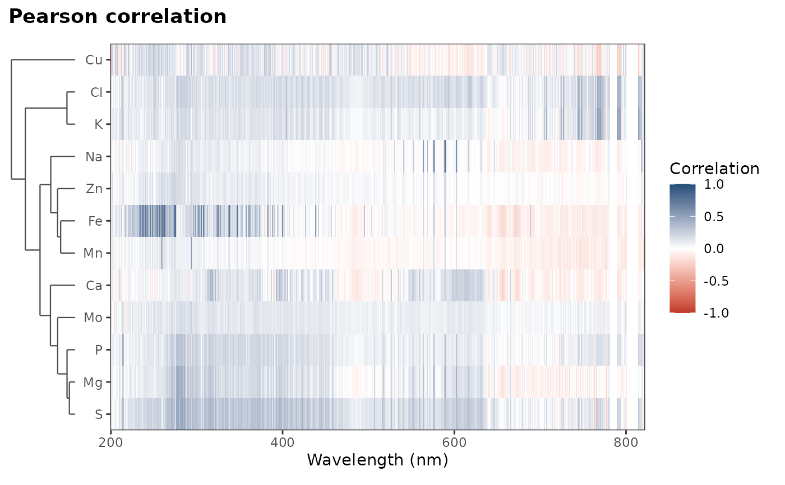

Correlation Coefficients: Pearson, Spearman, Kendall, Chatterjee, and Biweight Midcorrelation
Source:R/correlation.R
correlation.RdComputes various correlation coefficients between one or several response variables and each of the remaining variables in a given data frame or tibble. The available correlation methods are Pearson's product-moment correlation (parametric), Spearman's rank correlation, Kendall's tau correlation (non-parametric), Chatterjee's new correlation coefficient, and the biweight midcorrelation (a robust correlation measure).
Usage
correlation(
x,
var,
method = "pearson",
plot = FALSE,
color = c("#1f4e79", "#c0392b"),
interactive = FALSE,
top = NULL,
cluster = FALSE
)Arguments
- x
A data frame or tibble containing the variables of interest.
- var
The response variable(s): one or several columns, given unquoted, as strings, or with a tidyselect helper, such as
c(K, Ca)ordplyr::all_of(minerals). The other columns are the variables correlated with each response.- method
A character string indicating the correlation method to use. Allowed values are "pearson", "spearman", "kendall", "chatterjee", or "bicor" (for biweight midcorrelation). The default is "pearson".
- plot
A logical value indicating whether to produce a visualization of the correlations. Default is FALSE (no plot).
- color
The colors of the plot: one color, or two for positive and negative correlations (the two ends of the color scale of a heatmap). Default is
c("#1f4e79", "#c0392b").- interactive
A logical value indicating whether to create an interactive plot using plotly. Default is FALSE (static ggplot2 plot).
- top
For a bar chart (or a heatmap of variables that are not wavelengths), the number of variables with the largest absolute correlations to show. Default is
NULL(all).- cluster
With several responses, a logical: order the rows of the heatmap by a hierarchical clustering of the responses on their correlations, and draw its dendrogram (
FALSE, default). Ignored with a single response.
Value
If
plot = FALSE, a tibble with columnsvariable,.correlationandmethod, sorted by decreasing correlation. With several responses, it starts with a columnoutcome, and is sorted within each response.If
plot = TRUE, a list containing the tibble (correlation) and aggplot2object (plot; a patchwork object withcluster = TRUE), and withcluster = TRUEthe clustering (clustering, anstats::hclust()object).If
plot = TRUEandinteractive = TRUE, aplotlyobject.
Details
The Pearson correlation coefficient measures the linear relationship between two continuous
variables and is suitable when the data follows a bivariate normal distribution. The Spearman
and Kendall correlations are non-parametric measures of monotonic association, making them
suitable for non-linear relationships and when the data deviates from normality.
The Chatterjee correlation coefficient \(\xi_n(X, Y)\) measures how much the response
var is a (possibly non-monotonic) function of each other variable; it lies between
0 and 1 (asymptotically) and is not symmetric. The biweight midcorrelation is
a robust correlation measure that downweights the influence of outliers and is
recommended when the data contains extreme values or deviates significantly
from normality.
Missing values are handled pairwise: each coefficient uses the observations where both the response and the other variable are available. With several responses, each one uses its own observations, so a response with many missing values does not reduce the data of the others.
Plots
When the variables are named by wavelengths (the channels of spectra), the plot is a correlation spectrum: the correlation at each wavelength, with the thresholds of significance at the 5% level (for the Pearson, Spearman and biweight coefficients, from the t distribution; not corrected for multiple testing). Otherwise, it is a chart of the correlation of each variable, sorted, colored by sign and labeled with its value. The interactive versions show the variable and its correlation on hover; the correlation spectrum uses WebGL, so it stays fast with thousands of channels.
With several responses, the plot is a heatmap: one row per response, in the order given, and one column per wavelength (each tile as wide as the spacing of the channels, with gaps between detectors) or per variable. The color scale is fixed, from -1 to 1 (0 to 1 for Chatterjee's coefficient), so that a color means the same correlation in every row and in every plot.
With cluster = TRUE, the responses are clustered on their correlation
profiles, the correlations with all the variables (as a function of
wavelength, for spectra): the distance between two responses is
\(1 - r\), where \(r\) is the Pearson correlation between their
profiles, and the clusters are merged by average linkage. Responses whose
correlations rise and fall at the same wavelengths, such as elements with
lines in the same regions or that vary together in the samples, are then
adjacent, and the dendrogram on the left shows how similar they are. The
static plot then needs the patchwork package; the interactive one is
only reordered.
References
Chatterjee, S. (2021). A new coefficient of correlation. Journal of the American Statistical Association, 116(536):2009-2022.
Wilcox, R. (2012). Introduction to robust estimation and hypothesis testing (3rd ed.). Academic Press. (ISBN 978-0123869838).
Examples
# LIBS spectra of forage samples and their mineral contents
data(forageLIBS)
spectra_id <- names(forageLIBS)[1:2]
minerals <- names(forageLIBS)[3:14]
# potassium against the other mineral contents
correlation(forageLIBS[minerals], K)
#> # A tibble: 11 × 3
#> variable .correlation method
#> <chr> <dbl> <chr>
#> 1 P 0.548 pearson
#> 2 Cl 0.390 pearson
#> 3 S 0.360 pearson
#> 4 Mg 0.268 pearson
#> 5 Ca 0.194 pearson
#> 6 Mo 0.110 pearson
#> 7 Zn 0.0806 pearson
#> 8 Fe 0.0309 pearson
#> 9 Na 0.0000116 pearson
#> 10 Mn -0.0482 pearson
#> 11 Cu -0.367 pearson
correlation(forageLIBS[minerals], "K", method = "bicor")
#> # A tibble: 10 × 3
#> variable .correlation method
#> <chr> <dbl> <chr>
#> 1 P 0.542 bicor
#> 2 Cl 0.411 bicor
#> 3 S 0.364 bicor
#> 4 Mg 0.248 bicor
#> 5 Ca 0.219 bicor
#> 6 Mo 0.179 bicor
#> 7 Fe 0.140 bicor
#> 8 Zn 0.107 bicor
#> 9 Mn 0.0224 bicor
#> 10 Na -0.0856 bicor
correlation(forageLIBS[minerals], K, plot = TRUE)$plot

spectra <- forageLIBS[setdiff(names(forageLIBS), spectra_id)]
# a correlation spectrum: potassium against every channel
k <- correlation(spectra[setdiff(names(spectra), setdiff(minerals, "K"))], K, plot = TRUE)
k$plot

# a heatmap: every mineral against every channel
all_minerals <- correlation(spectra, dplyr::all_of(minerals), plot = TRUE)
all_minerals$plot

# the same, with the minerals clustered by their correlation profiles
if (requireNamespace("patchwork", quietly = TRUE)) {
correlation(spectra, dplyr::all_of(minerals), plot = TRUE, cluster = TRUE)$plot
}
